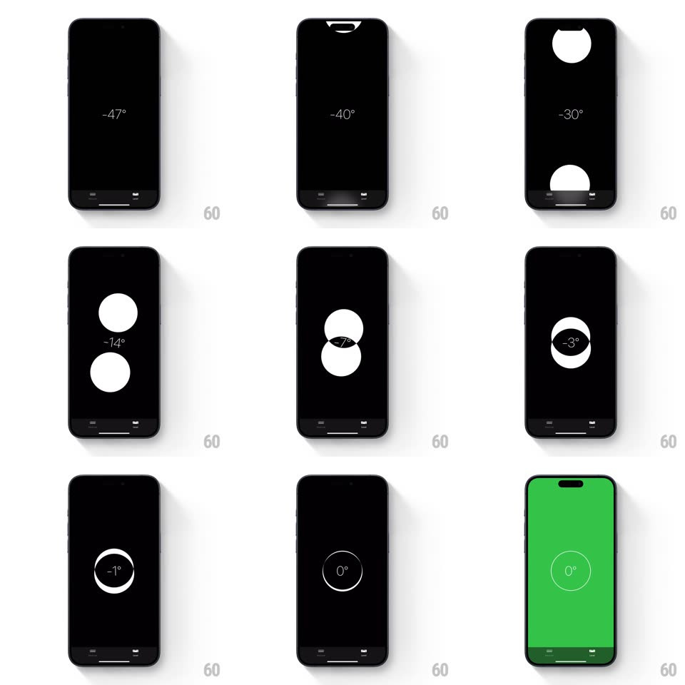

Media
Frame-by-frame

Rebuild this interaction 1:1: Apple Measure's level - two white circles drift with gravity and merge with a gooey metaball join into a single ring when the phone hits 0 degrees.

Rebuild this interaction 1:1: Apple Measure's level - two white circles drift with gravity and merge with a gooey metaball join into a single ring when the phone hits 0 degrees. ## Integration Integration: stack-agnostic spec - springs given as stiffness/damping, timed motions as duration + curve; map every value to your framework and animation library of choice. ## Scene Black screen with a centered degree readout. Two solid white circles move on the vertical axis - one anchored toward the top edge, one toward the bottom - closing on the center as the phone approaches level. At 0 degrees the screen flashes green and the circles fuse into one outlined ring around the readout. ## Motion spec Pattern: gravity-driven metaball convergence. - The circles track device tilt in real time (sensor-driven, critically damped follow ~300/30 so they glide without jitter): offset from center is proportional to the angle, the top circle drifting up and the bottom circle down as tilt increases. - When the circles near each other (within ~1.4 radii), they attract gooey-style: shapes bulge toward each other and merge with a smooth metaball bridge (threshold-blur alpha trick), the readout bridging inside them. - Crossing 0 degrees: the merged blob resolves into a single white ring (fill dissolves to a 4px stroke, 250ms, ease-out), the readout snaps to 0 with a tiny tick, and the whole screen flashes green (background 0 to full green and back, 400ms) with a haptic bump. - Leaving level: the ring fills back into a blob (200ms) and splits apart as tilt returns. - The degree readout updates continuously, its digits rolling vertically on change (100ms). ## Calibration - Circles never teleport - every position is a smoothed sensor follow. - The metaball merge must be geometric, not a crossfade: the bridge neck is the tell. ## Reduced motion Circles move without goo; green flash becomes a 200ms fade. ## Don't miss - At rest off-level, circles rest against the screen edges, half-clipped by the bezel. - The final ring is an outline only - the filled blob and the ring are two distinct states.